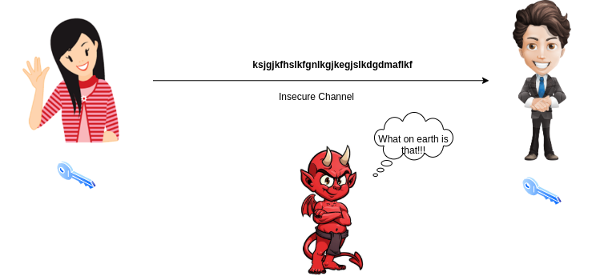

Classical Use of Cryptography
Problem of talking through insecure channel

Message sent with encryption

The CIA triad
Generally, in cryptography we try to ensure 3 security primitives:
- Confidentiality: Adversary should not be able to learn our secret message
- Integrity: They also should not be able to tamper our message
- Availability: Our message should be readily accessible to the recipient without any downtime.
But now we want to do many things more with crypto……
Simple example: RSA
Remember that, \(E(x) = x^e (mod n)\)
So, \(E(x) \cdot E(y) = x^e \cdot y^e = (xy)^e = E(xy) (mod n)\)
Which means, RSA supports the homomorphic multiplication.
Problems with RSA
- It is not fully homomorphic. You can’t really do the addition.
- RSA is not semantically secure.
- RSA depends on the fact that factoring a number is hard. But it is not true for quantum computers.
Hence, we shall look into some post-quantum constructions.
GSW Scheme
Gentry-Sahai-Waters is a fully Homomorphic Construction.
There are generally 2 types of FHE schemes currently. One type is based on GSW, the other one on BFV.
GSW depends on problem known as Learning with Errors (LWE).
Learning with Errors
Given integers \(q, n\) and a vector \(\mathbf{s} \in \mathbb{Z}_q^n\), we construct samples using the following process:
- Select a random vector \(\mathbf{a} \in \mathbb{Z}_q^n\) and a small Gaussian noise \(e \in (0, 1)\)
- Calculate \(t = (\mathbf{a} \cdot \mathbf{s}) / q + e\)
- Output \((\mathbf{a}, t)\)
Given many such samples, the problem is to find \(\mathbf{s}\).
Or in the decision version of the problem, the goal is to distinguish between randomly generated tuples \((\mathbf{a}, t)\) and that generated by the above process.
Regev showed that both can be reduced from each other.
Both of these problems are hard.
GSW Details
- The secret key is \(\mathbf{t} = [\mathbf{-s}, 1] \in \mathbb{Z}_q^n\)
- The public key \(A \in \mathbb{Z}_q^{n \times m}\) is constructed as follows:

- \(B\) is publicly known matrix and \(e\) is a vector of small Gaussian errors.
Note that, \(tA = -sB + sB + e = e \approx 0\)
Our message space is \(\lbrace 0, 1 \rbrace\)
In addition to these we also have public gadget matrix \(G\) and a corresponding function \(G^{-1}(.)\) such that, \(G G^{-1} (M) = M\) for any \(M \in \mathbb{Z}^{n \times m'}\).
Encryption
Choose a random \(R \in \mathbb{Z}_q^{m \times m}\).
This is done for key blinding purpose.
Compute the ciphertext as \(C = AR + xG\) where \(x\) is the message bit.
Note that \(tC = eR + xtG \approx xtG\)
Decryption
Construct \(w \in \mathbb{Z}_q^{1 \times n}\) as \(w = [0, 0, ..., \lceil q/2 \rceil]\)
Compute \(v = tCG^{-1}(w^T)\)
Note that \(v \approx xtGG^{-1}(w^T) = xtw^T = x \lceil q/2 \rceil\)
If \(v < \lceil q/2 \rceil\), \(x = 0\), otherwise \(x = 0\)
Homomorphic Addition (XOR)
Let 2 bits be \(x_1\) and \(x_2\) and their encryptions be \(C_1\) and \(C_2\).
Define \(C^+ = C_1 + C_2\)
Clearly, \(C^+ = A(R_1 + R_2) + (x_1 + x_2)G \implies tC^+ \approx (x_1 + x_2)tG\)
Homomorphic Multiplication (AND)
Define \(C^{\times} = C_1 G^{-1}(C_2) = (AR + x_1G) G^{-1}(C_2)\)
Clearly, \(tC^{\times} = t C_1 G^{-1}(C_2)\)
\(\approx x_1 t G G^{-1}(C_2) = x_1 t C_2 \approx x_1 x_2 t G\)
Problems
Ciphertext expansion: Even for a single bit, the ciphertext is huge.
Error propagation: For addition error propagates linearly. But for multiplication, it is exponential.